Mixed Models: Random coefficients regression
keywords Mixed models, hierarchical linear model, multilevel model, simple slopes
1.0.1
In this example we work out the analysis of some clustered data estimating a mixed model (also called hierarchical linear model or multilevel model) on some simulated (silly) data. We use the GAMLj module in Jamovi. One can follow the example by downloading the file beers at bars and open it in jamovi. Be sure to install GAMLj module from within jamovi library.
Data can also be opened within jamovi in the jamovi data library,
with the name Beers.

The research design
Imagine we sampled a number of bars (15 in this example) in a city, and in each bar we measured how many beers customers consumed that evening and how many smiles they were producing for a give time unit (say every minute). The aim of the analysis is to estimate the relationship between number of beers and number of smiles, expecting a positive relationship.
We have then 15 bars, each including a different number of customers
In the data set, the classification of customers in bars is contained in
the variable bar. The frequencies of customers in each bar
is in the next table (in jamovi descriptives, tick
frequencies table) .
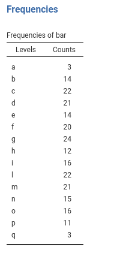
Number of beers and number of smiles are recorded in the dataset as
beer and smile, respectively, with the
following descriptives and distributions.
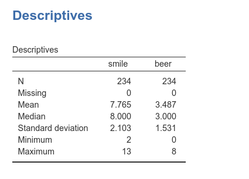
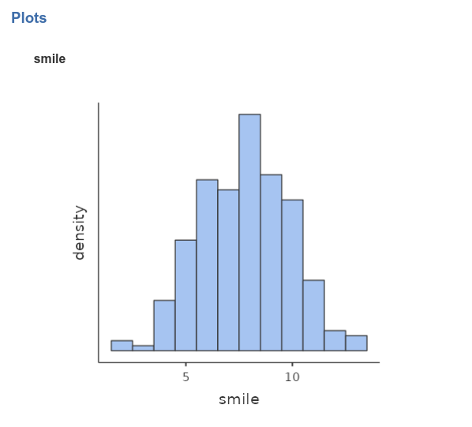 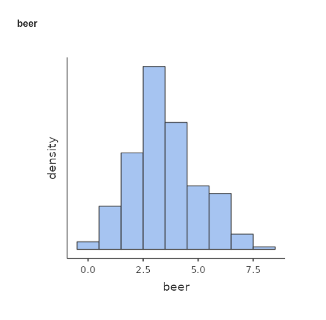
Understanding the problem
If we ignore for a moment the fact that we sampled customers within
bars, the analytic problem boils down to a simple regression, with
smile as dependent variable and beer as
independent variable.
By looking at the scatterplot (in jamovi Exploration
-> scatr::Scatterplot)

we can see that there seems to be a negative relationship between the
two variables. A Simple regression ((in jamovi
Linear Models ->
GAMLj::General Linear Model)) confirms this impression.
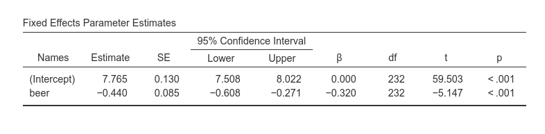

The problem with this analysis is that it does not consider the clustering of the data, that is, that customers are grouped within bars. If customers within a bar are more similar in their scores than customers across bars, data show dependency and thus the GLM we ran would be biased. We have to take clustering into the account.
To get the feeling of possible effects of clustering, let’s first
look at the distributions of smile and beer
within each bar (in jamovi Exploration ->
Descriptives, put bar in split by
field).
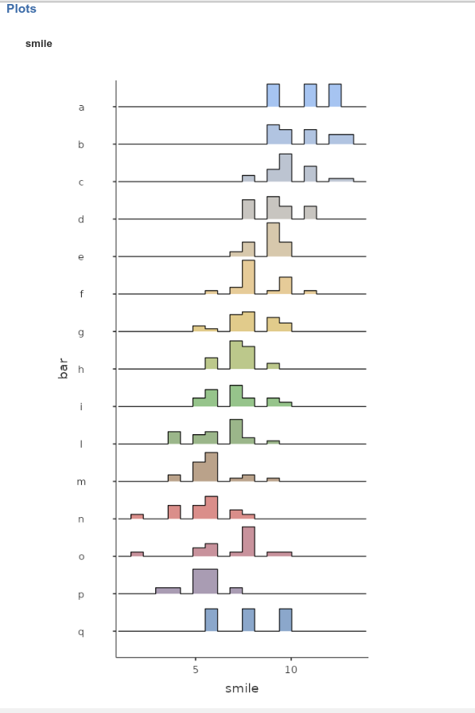 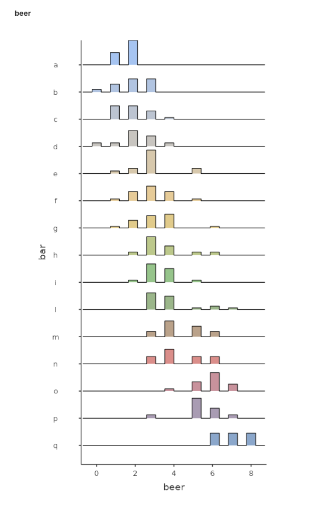
We can notice that bars tend to have different means both in the
smile and in the beer variables, pointing to
possible dependency in the data.
Furthermore, a scatterplot highlighting the bars classification seems to suggest that the points representing scores (# of smiles given the # of beers) are clustered within bars, and also reveals that a model in which each bar is allowed to express a different regression line would fit the data much better than a model with only one regression line, fixed for every bar.

Mixed model
The mixed model allows to obtain exactly what we need here:
estimating the relationship between beers and smiles by fitting a
regression line within each bar, and then averaging the regression lines
to obtain an overall effect of beer on smile.
The mixed model accomplishes that by letting the regression coefficients
to vary from cluster to cluster, thus estimating different lines for
different bars.
The coefficients that vary from cluster to cluster are defined as random coefficients, and their mean (fixed expected value) are defined as fixed coefficients.
Because a simple regression line has two coefficients (the intercept
and the slope) we can let the intercept (or constant term) to vary
across clusters, the slope, or both. Practically, we define the
intercept, or the slope (of beer), or both as random
coefficients.
Because we are interested in the overall effect of beer
on smile, we want the effect of beer to be
also a fixed effect, that is a average slope estimated
for across bars. If the beer slope is allowed to vary from bar to bar
(i.e. it is set to be random), then the fixed effect should be
interpreted as the average slope, averaged across
clusters. If the beer slope is not random, then the fixed effect is
simply the beer effect estimated across participants.
Random Intercepts Model
Set up
We start simply by allowing only the intercepts to vary. This model is called __random intercepts_ model to signal that only the intercepts are allowed to vary from cluster to cluster.
In order to estimate the model with jamovi, we first need to set each variable in the right field.

First we put smile in the
Dependent Variable field and beer in the
Covariates field. When a variable is put in the
Covariates field, it is treated as a continuous
quantitative variable (as.numeric() in R). Had we had a
categorical independent variable, we would have put it in “Factors”, so
that proper coding of the groups would be obtained
(as.factor() in R).
After that, we define bar as the clustering (grouping)
variable, by putting it in the Cluster field.

If we now look at the results panel, we see that the model definition is not completed yet.
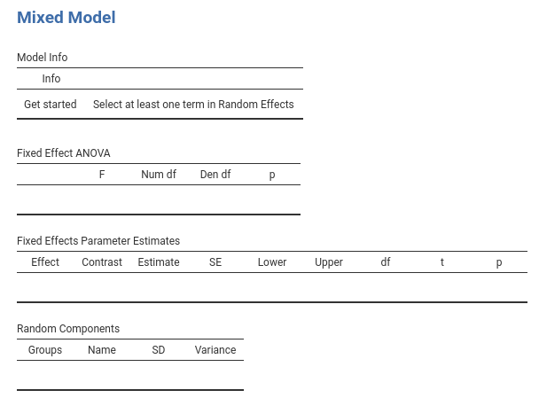
We need to specify the random component, that is we should set which
coefficient are random. We do that by expanding the
Random Effects tab.
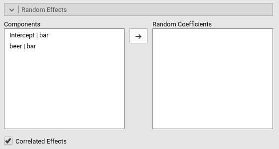
On the left side, under Components we find all possible
random effects allowed in the model already prepared by jamovi. In our
example, they are the intercept random across bars, and the
slope of beer random across bars. Jamovi uses the R
formulation of random effects as implemented by the lme4 R
package. The bar | means random
across, thus we can read the “components” as
Intercept random across bar, and
beer slope random across bar.
Because we decided to start with a random intercept model, we just
select the first line in components and push it to the
Random Coefficients field.
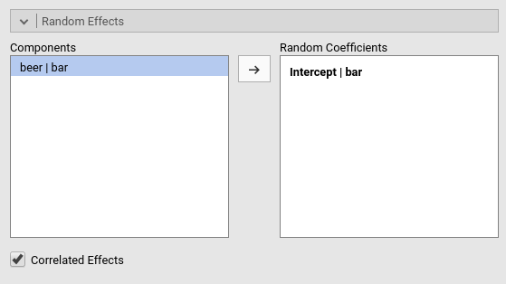
At this point, the model is estimated and the results appear in the results panel. Before inspecting the results, we have a look at the fixed effects definition, by expanding the `Fixed Effects’ tab.
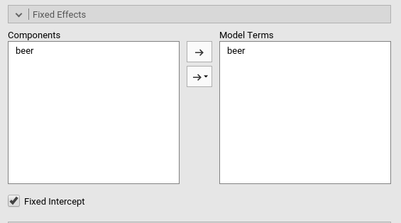
Although we did not do anything about the fixed effects, jamovi
automatically includes all independent variables defined in
Covariates or in Factor in the fixed effects
model. Obviously, when the models are complex, one can tweak the model
terms to suit the analysis aims.
Results
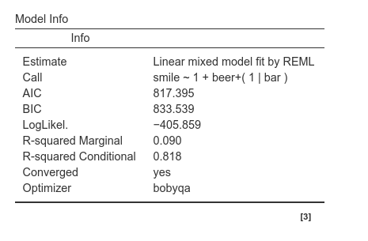 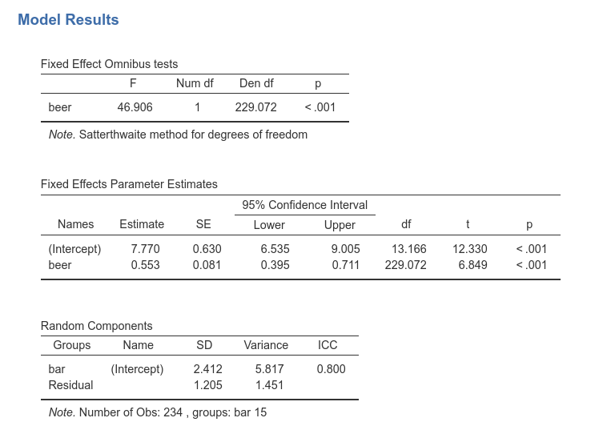
The first table in the output contains info about the model and the estimation.
- The
Callrow displays the model in lme4 R package formulation. This can be useful to re-run the same analysis in R (not using GAMLj module). - The
AICrow displays the Aikeke Information Criterion, which can be useful to evaluate the model, especially in comparison with other models. Details can be found in Mixed Models module technical details in [Zuur et. al , 2009] al.](http://www.springer.com/la/book/9780387874579) - R-marginal and R-conditional are proportion of reduced error, or pseudo-\(R^2\). They are described in Johnson (2014) and implemented in piecewiseSEM. For our purposes, we can interpret them as follows: R-marginal is the variance explained by the fixed effects over the total (expected) variance of the dependent variable. The R-conditional is the variance explained by the fixed and the random effects together over the total (expected) variance of the dependent variable. In our example, the fixed effects do not explain much (.090), but the overall model (fixed+random) captures a fairly big share of the variance (.818).
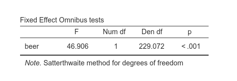
Fixed effects ANOVA gives the F-tests associated with
the model fixed effects. Here we see that beer has a
statistical significant effect (on average) on number of smiles.
As regards the degrees of freedom (nobody cares about them, I know), jamovi mixed model tries to use Satterthwaite approximation as much as possible, but for complex models it may fail. When that happens, Kenword-Roger approximation is used and, if the latter does not fail, F-tests are computed. A note signals which approximation is used.
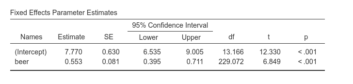
Fixed effects Parameters Estimates gives the fixed B
coefficients, the fixed (average) intercept, t-tests associated with the
model fixed effects. Accordingly, we can say that averaging across bars,
beer has a statistical significant effect on number of
smiles, such that for each beer more, people smiles 0.553 smiles
more.
As regards the intercept (which people usually ignore) we should
interpret it as the expected number of smiles for the average number of
beers drunken. This can be surprising because one expects the intercept
to be the expected value of Y when X=0. It is, of course, also here but
jamovi mixed model module centers the continuous variables by default.
Thus, X=0 means X=mean. Indeed, in the Covariates Scaling
tab we see that:
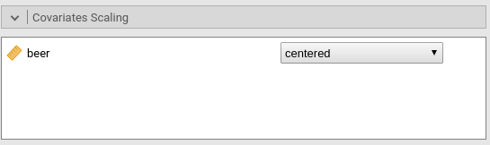
Options are available to scale the covariates, by centering it or standardizing it. The options “cluster-based-*” operate the re-scaling (centering or standardizing) within each cluster rather than on the sample as a whole.
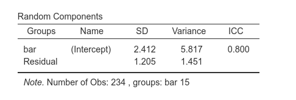
The Random Components table displays the variances and SD of the random coefficients, in this case of the random intercepts. From the table we can see that there is a good variance of the intercepts (\({\sigma_a}^2\)=6.53), thus we did well in letting the intercepts vary from cluster to cluster. (\({\sigma_a}^2\)=6.53) can be reported as an intra-class correlation by dividing it by the sum of itself and the residual variance (\(\sigma^2\)), that is \(v_{ic}={{\sigma_a}^2 \over {{\sigma_a}^2+{\sigma}^2}}\)
Finally, we can ask for the plot of the fixed and random effects together.
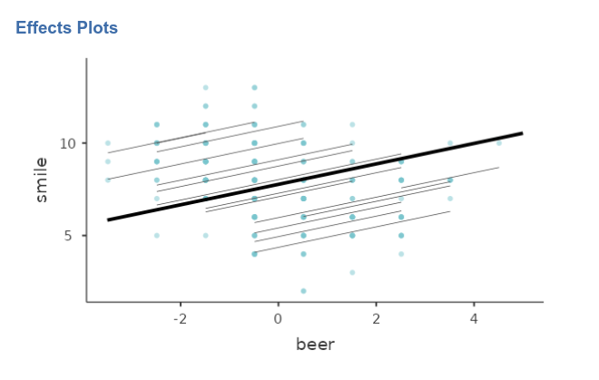
As expected, the random regression lines have different intercepts (different heights) but the all share the same slope (they are forced to be parallel).
Random Slopes Model
Set up
We can now expand the model by letting the slopes to vary as well. We
just need to update the definition of the random coefficients in the
Random Effects tab, adding also the beer|bar
term.
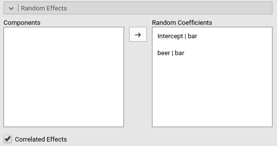
Notice that we have now two random effects, that can be correlated or
fixed to be uncorrelated (i.e. variance components model). The option
Correlated Effects set up the correlation of the random
effects. In this version of GAMLj module, the random coefficients can be
either all correlated or all not correlated. Future versions will allow
more freedom in the definition of the random covariance structure.
People experienced in SPSS Mixed would recognize these two options to be
UN and VC in SPSS syntax, respectively.
Results
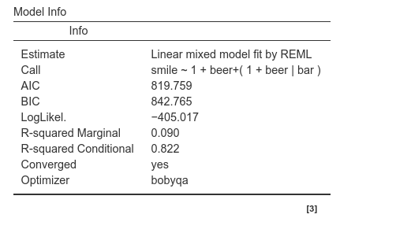
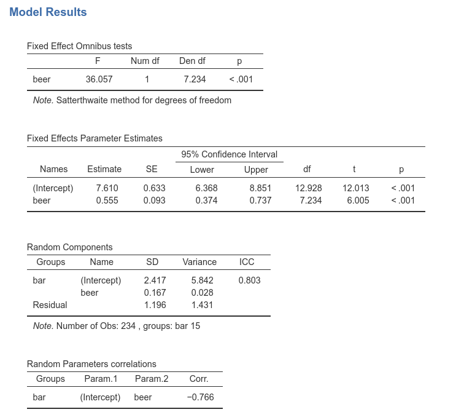
Results are substantially the same, showing that the variability of the slopes do no influence the interpretation of the results in a substantial way. We can notice, however, that the DF of the tests are different as compared with the random intercepts model. This is due to the fact that now the fixed slope 0.555 is computed as the average of the random slopes, and thus its inferential sample is much smaller.
In the ‘Random Components’ table we see a small variance of beer \({\sigma_b}^2\)=0.028, indicating that slopes do not vary much. Nonetheless, their variability it is not null, so allowing them to be random increases our model fit. As they say: if it ain’t broken, don’t fix it.
Finally, a correlation between intercepts and slopes can be observed, \(r\)=-.766, indicating that bars where people smile more on average (intercept) are the bars were the effect of beer is smaller.
The final model, with random intercepts and slopes, captures the data with very different intercepts and slightly variable slopes.
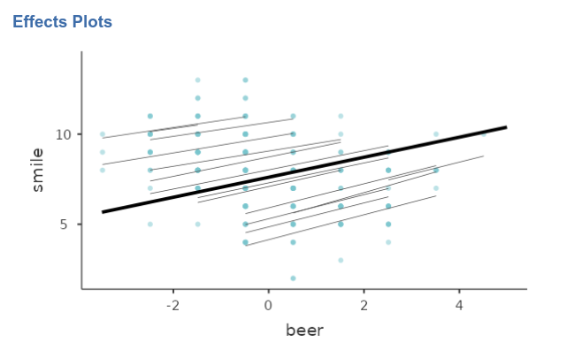
Comments?
Got comments, issues or spotted a bug? Please open an issue on GAMLj at github or send me an email